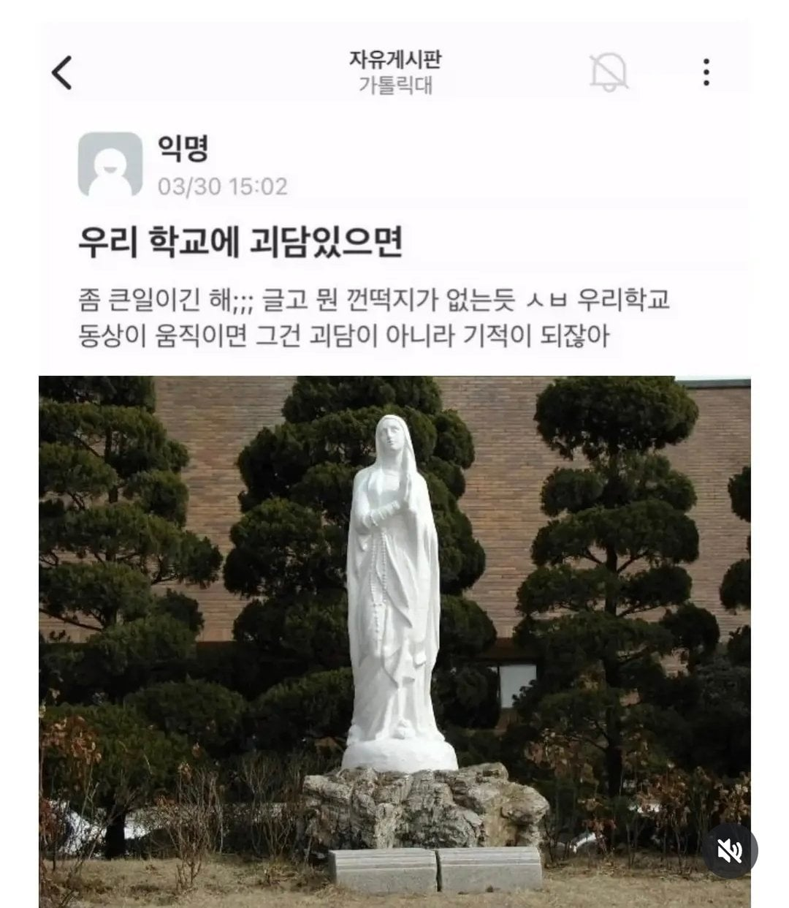
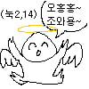
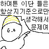
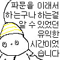

교황청에서 사람 보냄

교황청에서 사람 보냄
피눈물이벤트는 오히려 안나오면 섭섭한이벤트임
기초적인 성모발현이다
??? : 두려워하지 말라
여학생이 임신을 했대요
할렐루야
단나사마가 생겼어요
이 글레같은 ㄹ...아 아입니다 신부님!! 매일같이 회개하고 뉘우치고 있습니다!!!
레기도문을 읊으며 흑흑풍덩 회개하라
'성모 마리아가 예수를 임신했을 당시의 정확한 나이는 성경에 기록되어 있지 않으며, 역사·문화적 배경과 전승에 따라 보통 12세~16세 사이로 추정됩니다'
바티칸(종로)
그런 거에 주화입마하면 사람 오줌도 먹고 자동파문당하던데
해병대 자진입대 ㄷㄷ
윤율리아 ㅋㅋㅋㅋㅋ
괴담이 기적으로 이어지는곳
ㄹㅇ 할렐루야
바티칸에서 검증하러 온다고 ㅋㅋ
십자군 기적적인 부활

망설임을 갖고 있다면, 쏘는 것을 그만 두어라.
우는 천사를 못봤구나?
간츠보면 외계인들이 저런 동상 안에 숨어있다가 밤에 움직임
k-pope
경배하라!!


피눈물도 좀 흘려주고